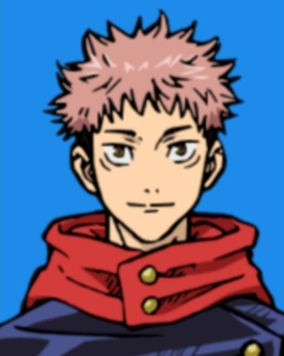
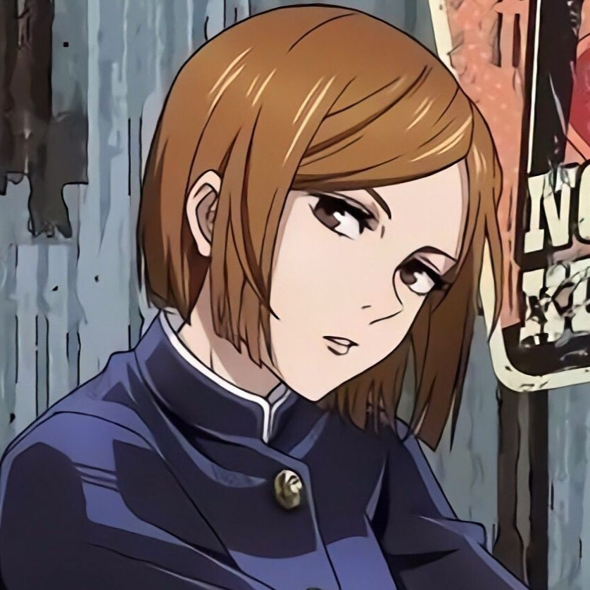

Protagonists



Tokyo Metropolitan College of Jujutsu
Name: Itadori Yuji
Birthday: March 20, 2002
Occupation: Jujutsu Sorcerer, Student
Abilities: Sukuna's vessel, Blood Manipulation, Black Flash, Hometown Domain


Tokyo Metropolitan College of Jujutsu
Name: Fushiguro Megumi
Birthday: December 22, 2002
Occupation: Jujutsu Sorcerer, Student
Abilities: 10 Shadows Technique, Chimera Shadow Garden


Tokyo Metropolitan College of Jujutsu
Name: Kugisaki Nobara
Birthday: August 7, 2002
Occupation: Jujutsu Sorcerer, Student
Abilities: Straw Doll Technique


Tokyo Metropolitan College of Jujutsu
Name: Gojo Satoru
Birthday: December 7, 1989
Occupation: Jujutsu Sorcerer, Teacher
Abilities: Limitless, Six Eyes, Unlimited Void